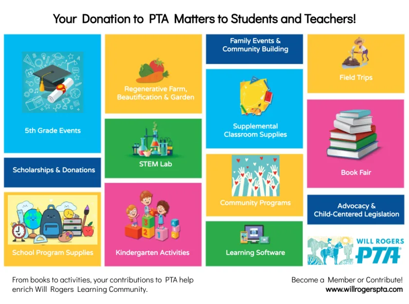

Give to the Will Rogers PTA
Your gift pays for what state and district budgets don’t: classroom supplies, library support, field trips, PE equipment, and so much more. Any amount helps, any time of year.
Will Rogers PTA is a 501(c)(3) nonprofit, so your gift is tax-deductible. Tax ID 23-7017326.

Where your gift goes
Donations to the Will Rogers Fund, our annual giving drive, go to this year’s PTA priorities:
Double your gift
Many employers match donations to nonprofits like ours. Requesting a match usually takes about five minutes: fill out your employer’s paper form or online request, and use our tax ID, 23-7017326. Questions or need help? Email treasurer@willrogerspta.com.
Should I give to the Ed Foundation too?
Yes, please! They pay for different things. The PTA funds extras at Will Rogers. The Santa Monica Education Foundation pays for staff and programs during the school day at every Santa Monica school, and it’s the only organization that can raise money for those.
How the Ed Foundation worksWhat it funds at Will Rogers, and why
The district centralized fundraising for school-day staff and programs so every student has equitable access to quality enrichment, and to resolve staffing liability issues when nonprofits hired extra staff. All annual Ed Foundation donations are granted to the district for staff and programs. Learn more in the Mission and History (opens in a new tab) section of the Ed Foundation’s website.
The suggested district-wide gift is $750 per child, and families are asked to give whatever amount is meaningful to them. Thanks to Ed Foundation donors, Will Rogers students get:
- Arts classes for all students
- Classroom aides for small-group instruction, reading intervention, social-emotional support, and more
- Regenerative Farm classes
- Staff training with Columbia University Teachers College
- Spanish Through the Arts
- Recorders for 3rd graders, plus music lessons and instruments for qualifying students
- Additional library books and materials
- Assistant teachers in 4th and 5th grade music classes